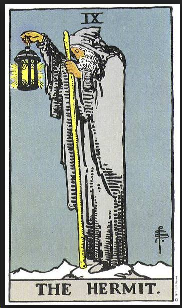
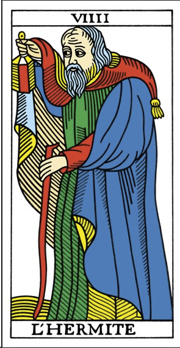
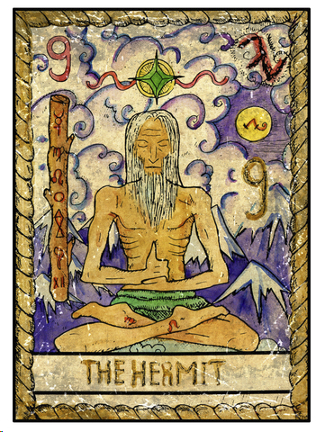
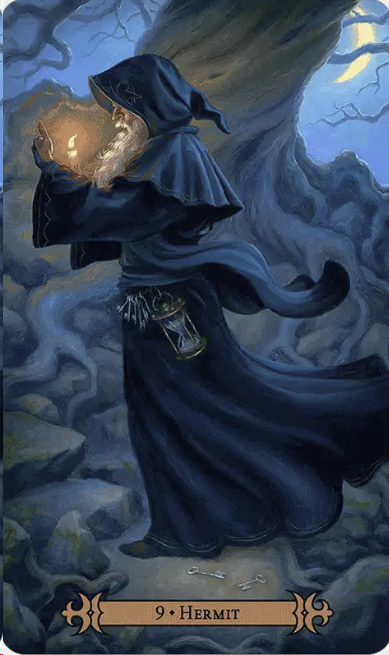
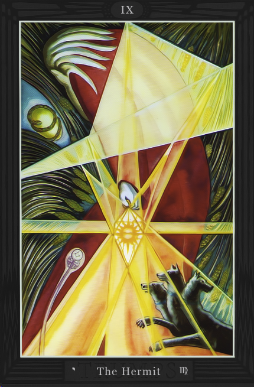
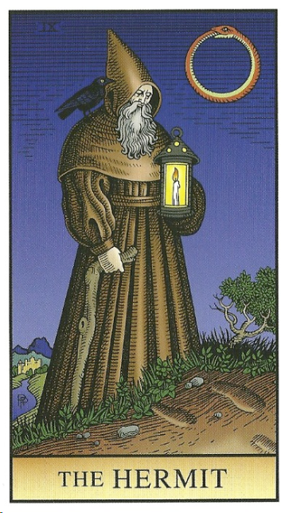
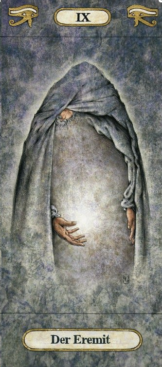
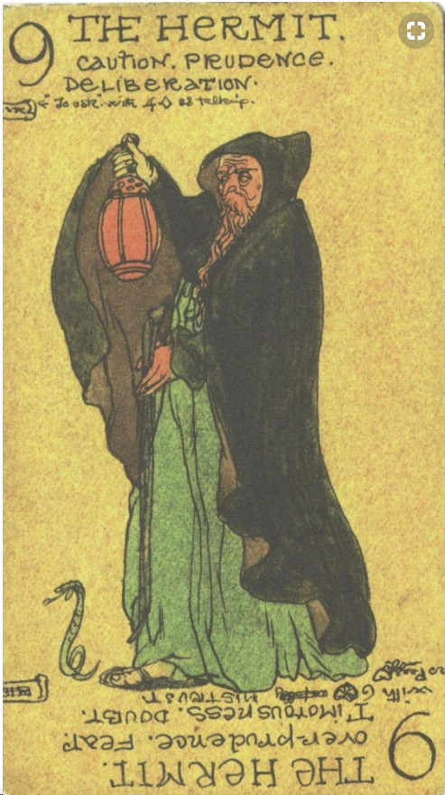
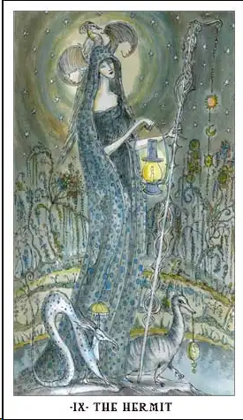
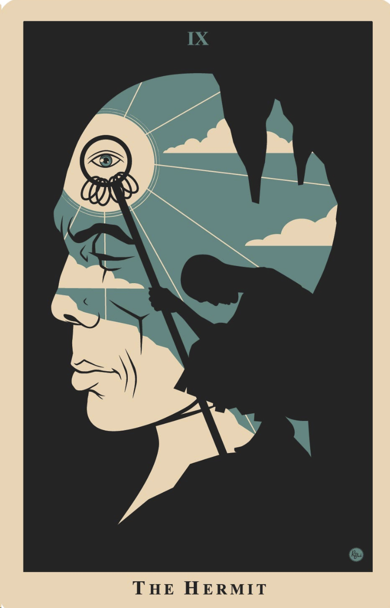
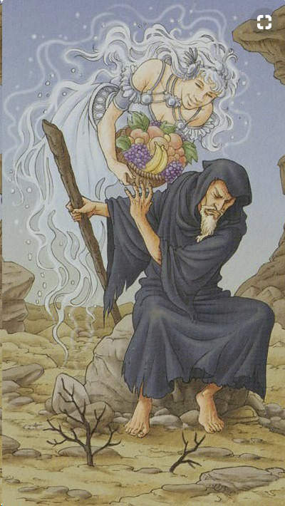
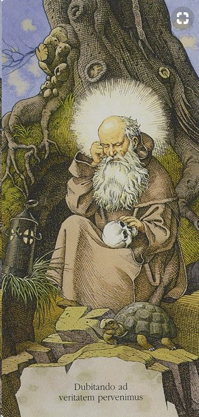
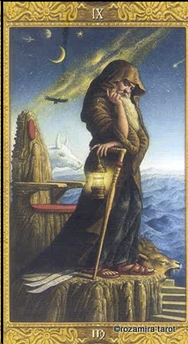
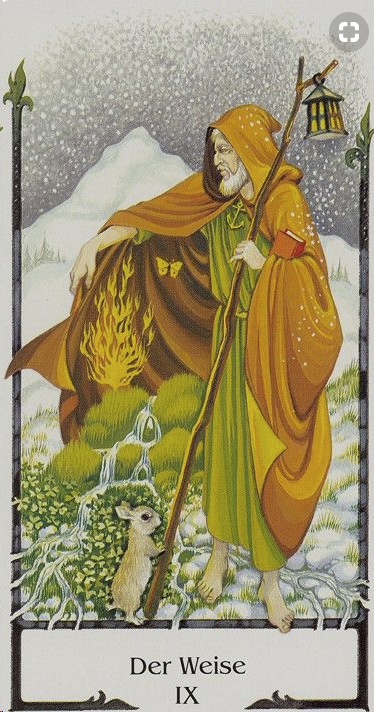
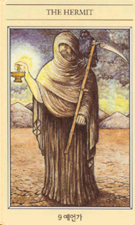
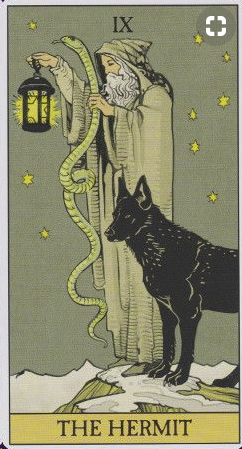
детали на карте:
Старец, закутанный в плаще, с фонарем в руках - символизирует одиночество, путь к самому себе (истинному). Фонарь освещает, собствено то, что рядом. Фонарь может символзирвать знания На некоторых картах, вместо огня - звезда (путеводная звезда). Обстановка на карете холодная, снег, горы - место уединения, там где никто не мешает. В руке у старнника посох
На одной из карт старцу женщина преподносит еду, а он отсраняется. Это передает атмосферу "Мне ничего не надо из этого мира. Дайте мне жить своей жизнью. Я вас не трогаю и вы меня не трогайте!"
На другой карте, старец открывает свой плащ а там весна! Это символизирует богатый внутренний мир. Внутри целая жизнь со своими радостями.
Вообще карта символизирует путь к внутренней целостности, гармонии и понимания себя. Путь, который человек должен пройти сам ибо другие тут просто лишние.
На картах часто встречается змея - как символ мудрости.
На одной из карт - стоит вместе с волком-одиночкой
Мифическое таро.
Кронос - младший сын Урана и Геи. Кронос в мифах персонифицируется со Временем.
Следование за собственным светом.
цвет: серый (непроявленность во внешнем), зеленый - саморазвитие, рост изнутри
синий - идеи, мышление, логика, холодность, отдаленность. Желтый - свет, цель, то к чему стреимся
фигура:
многоугольник (возможно неправильный), похож на камень
символ:
спираль закрученная во внутрь
буква:
l (как одинокий символ), либо одну точку .
ощущения
Я не мешайте мне жить. Мне все равно что думают другие, главно то , что думаю Я. Я сама знаю что мне делать и как мне жить, мне не нужны советы других. Живите своей жизнью, а я хочу жить своей.
ключевые слова:
одиночество, личный опыт, свой путь, жизнь вне социума
запах:
можжевельник
растение:
подснежник (один из под снега), алоэ
звук:
звук собсвтенного бияния сердца
вкус:
горький, как вкус алоэ
астрология:
Козерог
мифология:
Святые старцы, которые уходили в горы, в пещеры жить затворниками. Например Грот Симона Кононита в Абхазии (я была там кстати, удивительное место)
Фразы: "Меч победителя куется в одиночестве"
способности: обрести внутренний покой
амулеты: свеча, посох, капюшон
тело человека: позвоночник
ритуал: аскеза, пост, медитация